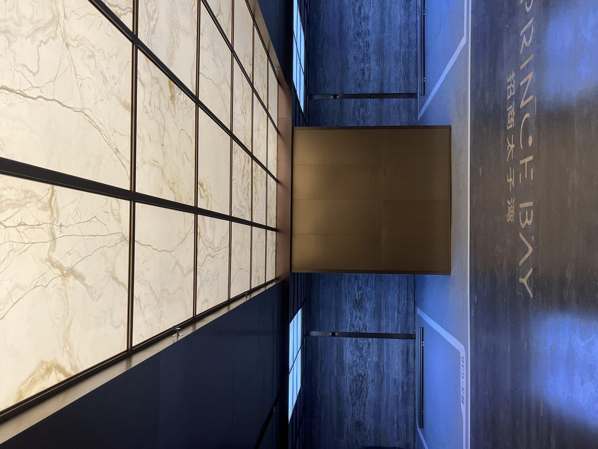
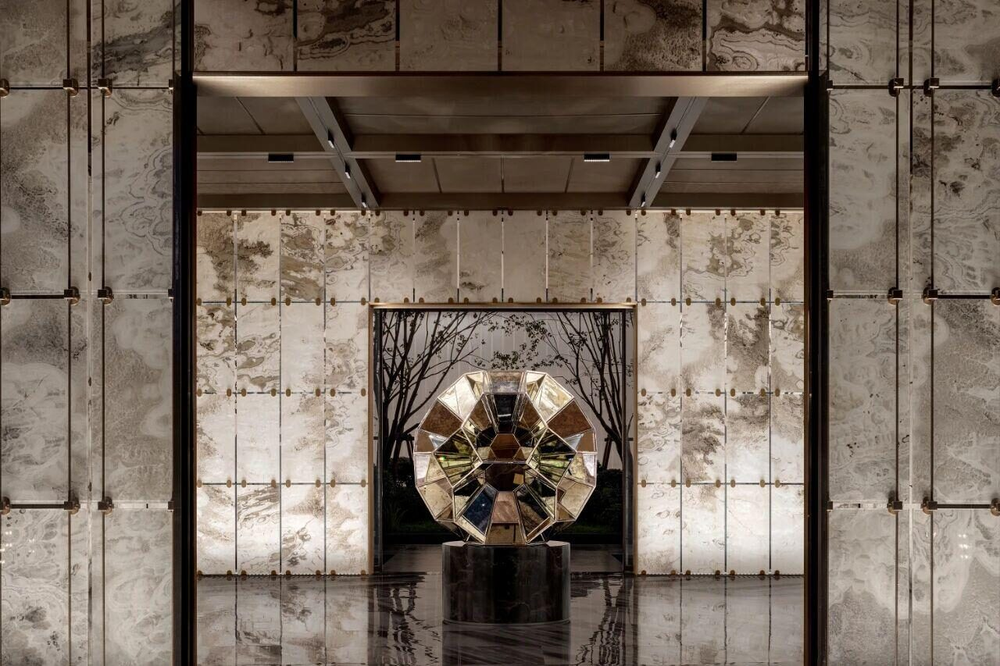
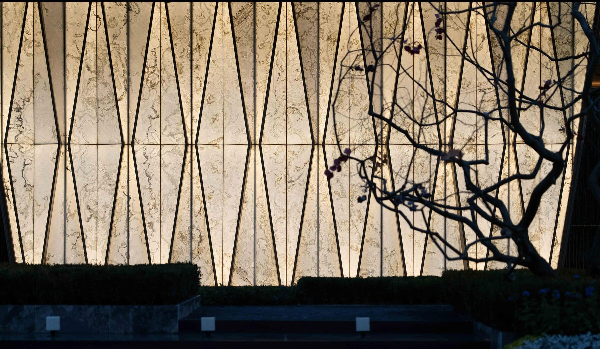
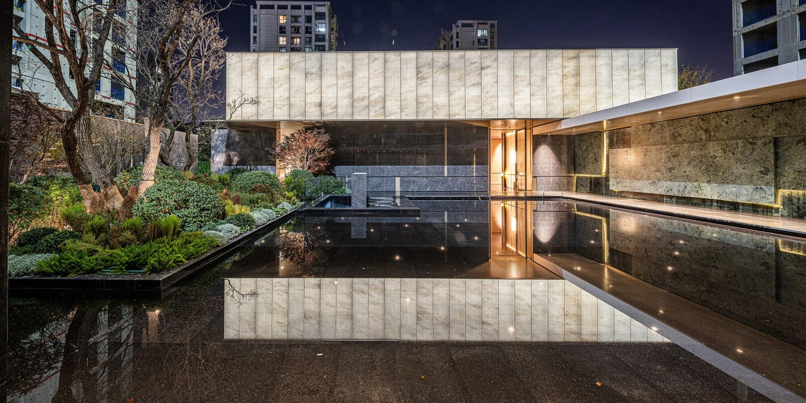
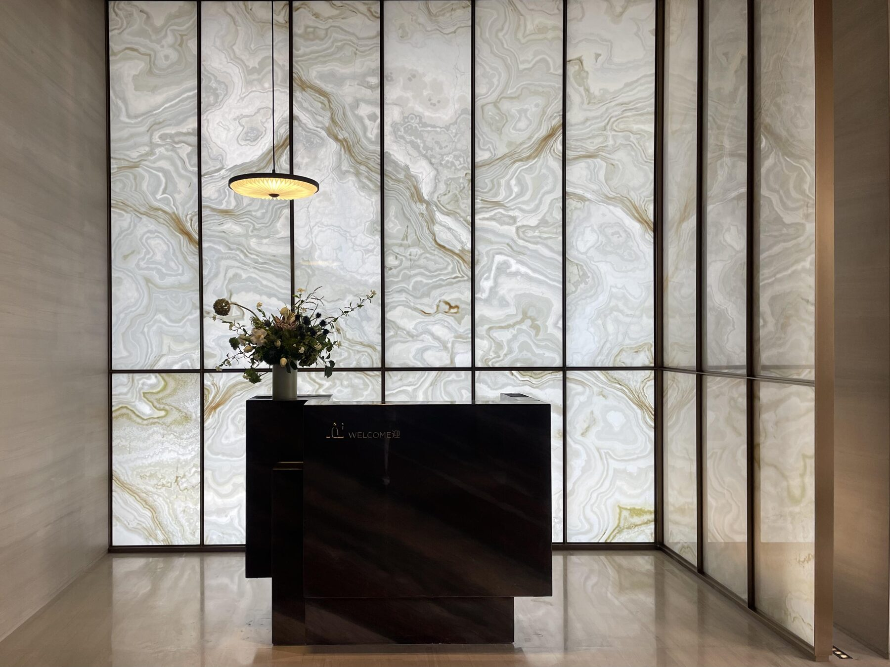

A jade stone ceiling hall for ceremonial homecoming

Nature as the axis — light, material and the emotion of homecoming on one route
View project →
A five-metre feature wall in a single imported jade slab
View project →
On Beijing's central axis — an Eastern sanctuary reimagined
View project →
Open community, urban theatre — Gold Nugget Awards winner
View project →Send us your project stage, space type and intended application — we respond with samples, drawings and engineering advice.